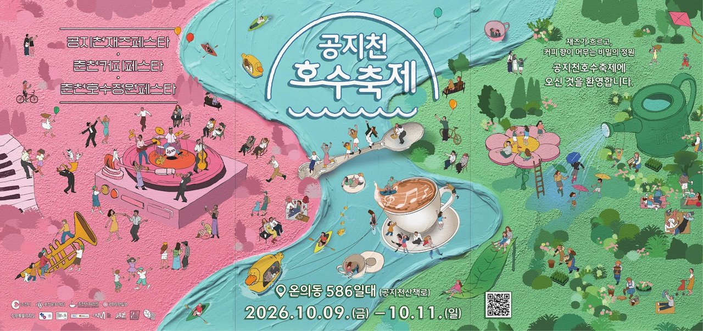
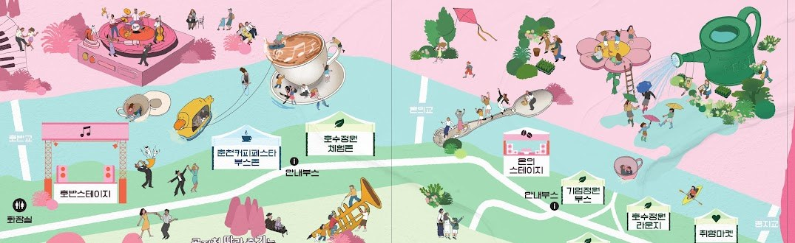
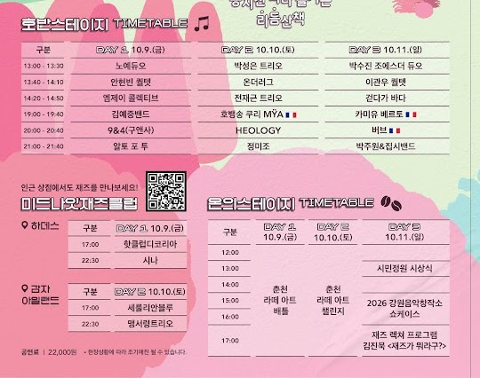
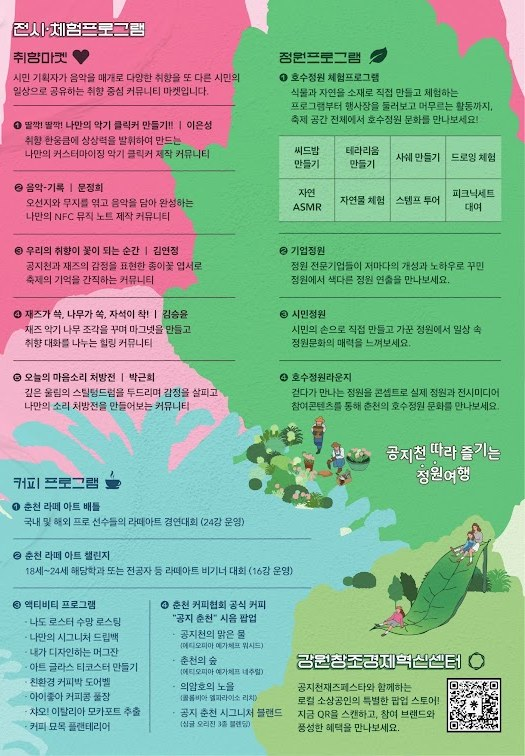
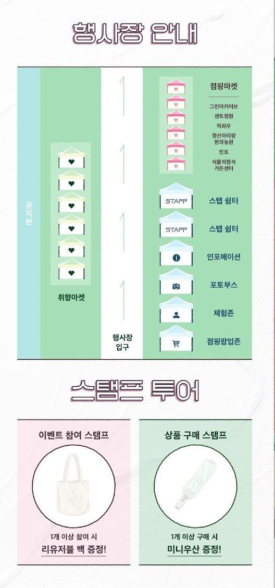
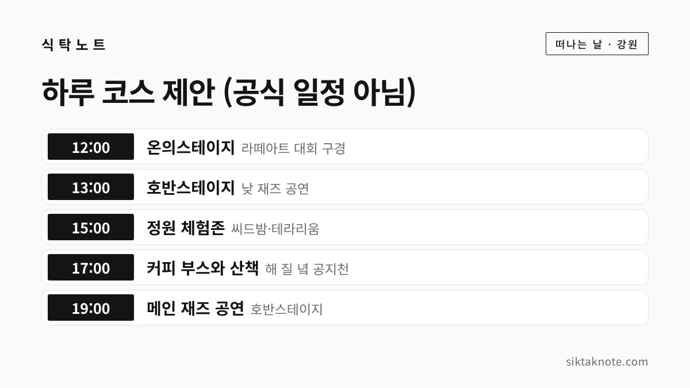

공지천 호수축제 2026 가이드 — 재즈 공연 시간표, 커피·정원 프로그램, 미드나잇 재즈클럽

3줄 요약
- 2026년 10월 9일(금)부터 11일(일)까지 춘천 공지천 산책로(온의동 586일대)에서 처음 열리는 축제예요.
- 공지천재즈페스타, 춘천커피페스타, 춘천호수정원페스타 세 축제가 한자리에 모여 낮에는 커피와 정원, 밤에는 재즈를 즐길 수 있습니다.
- 메인 재즈 공연은 매일 저녁 7시부터 호반스테이지에서 열리고, 실내 공연인 미드나잇 재즈클럽만 따로 공연료(22,000원)가 있습니다.
행사 정보
- 기간
- 2026년 10월 9일(금) ~ 11일(일), 3일간
- 장소
- 춘천 공지천 산책로 일대 (온의동 586일대, 호반교~공지교 사이)
- 구성
- 공지천재즈페스타 · 춘천커피페스타 · 춘천호수정원페스타
- 재즈 공연
- 호반스테이지 13:00~14:50 프린지, 19:00~21:40 메인 (리플릿 시간표)
- 유료 공연
- 미드나잇 재즈클럽 22,000원 (10/9 하데스, 10/10 감자아일랜드, 17:00·22:30)
- 주최
- 춘천시, 춘천문화재단 (언론 보도)
2026.10.08 확인 기준. 프로그램 시간은 리플릿 기준입니다. 현장 사정에 따라 바뀔 수 있으니, 리플릿의 QR코드나 춘천문화재단 안내를 한 번 더 확인하세요.
재즈와 커피, 정원이 한 길에 모였어요
춘천 공지천 산책로에서 올해 처음으로 공지천 호수축제가 열리는데요. 따로 열리던 공지천재즈페스타와 춘천커피페스타, 춘천호수정원페스타를 한데 묶은 축제입니다. 리플릿에 적힌 소개 문구가 "재즈가 흐르고, 커피 향이 머무는 비밀의 정원"이에요.
기간은 10월 9일(금)부터 11일(일)까지 사흘이고, 장소는 온의동 586일대 공지천 산책로입니다. 언론 보도에 따르면 춘천시와 춘천문화재단이 함께 준비했고, 낮에는 커피와 정원을, 밤에는 물가에서 재즈와 먹거리를 즐기며 하루를 머무는 축제로 꾸몄다고 해요.

행사장은 공지천을 따라 길게 이어집니다. 호반교 쪽에 재즈 공연이 열리는 호반스테이지가 있고, 그 옆으로 커피 부스존과 정원 체험존이 이어져요. 온의교를 지나면 라떼아트 대회와 강연이 열리는 온의스테이지, 기업정원과 호수정원 라운지, 취향마켓이 나옵니다. 안내 부스는 두 곳에 있으니, 길을 잃으면 먼저 찾아가시면 좋겠습니다.
날짜별 재즈 공연 시간표
공지천재즈페스타는 "공지천 따라 즐기는 리듬산책"이라는 이름으로 열리는데요. 보도에 따르면 메인 9팀, 공개 모집으로 뽑힌 프린지 9팀, 미드나잇 재즈클럽 4팀까지 모두 22팀이 무대에 섭니다. 낮 1시대에는 프린지 공연이, 저녁 7시부터는 메인 공연이 호반스테이지에서 이어져요.
| 시간 | 10/9(금) | 10/10(토) | 10/11(일) |
|---|---|---|---|
| 13:00~13:30 | 노예듀오 | 박성은 트리오 | 박수진 조에스더 듀오 |
| 13:40~14:10 | 안현빈 퀄텟 | 온더러그 | 이관우 퀄텟 |
| 14:20~14:50 | 엠제이 콜렉티브 | 전재근 트리오 | 걷다가 바다 |
| 19:00~19:40 | 김예중밴드 | 로뱅송 쿠리 (프랑스) | 카미유 베르토 (프랑스) |
| 20:00~20:40 | 9&4(구앤사) | HEOLOGY | 버브 (프랑스) |
| 21:00~21:40 | 알토 포 투 | 정미조 | 박주원&집시밴드 |

올해는 한불수교 140주년이라 프랑스 연주자들이 함께한다고 보도되었습니다. 토요일 밤에는 가수 정미조 님 무대가, 일요일 마지막에는 박주원&집시밴드 무대가 잡혀 있어서 주말 저녁에 사람이 가장 많이 몰릴 것 같아요. 야외 무대라 해가 지면 꽤 쌀쌀하니 무릎 담요나 겉옷을 하나 챙기시는 게 좋겠습니다.
미드나잇 재즈클럽은 따로 예매가 필요해요
밤늦게 실내에서 재즈를 더 듣고 싶다면 미드나잇 재즈클럽이 있는데요. 축제장 근처 공연장에서 열리고, 이 공연만 공연료 22,000원이 따로 있습니다.
- 10월 9일(금), 하데스: 17:00 핫클럽디코리아, 22:30 시나
- 10월 10일(토), 감자아일랜드: 17:00 세룰리안블루, 22:30 맹서령트리오
보도에 따르면 회차마다 60석 규모라고 해요. 리플릿에도 "현장 상황에 따라 조기 매진될 수 있다"고 적혀 있으니, 마음에 둔 공연이 있다면 리플릿 QR코드로 먼저 확인해 보시는 게 좋겠습니다. 호반스테이지 메인·프린지 공연의 입장료는 리플릿과 보도에서 따로 찾지 못했어요. 산책로에 열린 야외 무대라 부담 없이 들를 수 있을 것 같지만, 가기 전에 공식 안내를 한 번 확인해 주세요.
커피 좋아하신다면 온의스테이지로
춘천커피페스타에는 보도에 따르면 춘천 지역 카페와 빵집 26곳이 참여합니다. 부스는 호반스테이지 옆 커피 부스존에 모여 있어요. 온의스테이지에서는 라떼아트 대회가 이틀에 걸쳐 열리는데요.
- 10월 9일(금) 12:00~17:00, 춘천 라떼 아트 배틀: 국내외 프로 선수들의 라떼아트 경연대회 (24강)
- 10월 10일(토) 12:00~17:00, 춘천 라떼 아트 챌린지: 18~24세 관련 학과·전공자가 겨루는 비기너 대회 (16강)
직접 해 보는 프로그램도 많습니다. 수망 로스팅, 나만의 시그니처 드립백 만들기, 머그잔 꾸미기, 커피박 도어벨 만들기, 모카포트 추출, 커피 묘목 플랜테리어 같은 체험이 리플릿에 올라 있어요. 춘천커피협회가 만든 공식 커피 "공지 춘천" 시음 팝업도 열리는데, 원두 이름이 재미있습니다. "공지천의 맑은 물", "춘천의 숲", "의암호의 노을", 그리고 이 셋을 섞은 "공지 춘천 시그니처 블렌드"예요. 춘천 풍경을 한 잔씩 맛보는 셈이라 커피를 좋아하신다면 꼭 들러 보시면 좋겠습니다.

정원을 걸으며 만들고 쉬는 시간
춘천호수정원페스타는 산책로 곳곳을 작은 정원으로 꾸미는 축제인데요. 정원 전문 기업들이 꾸민 기업정원, 시민이 직접 만든 시민정원, 전시와 참여 콘텐츠로 꾸민 호수정원 라운지를 차례로 둘러볼 수 있습니다. 보도에 따르면 시민정원은 시민과 학생 10팀이 만들었고, 10월 11일(일) 오후 1시에 온의스테이지에서 시민정원 시상식이 열립니다.
아이와 함께라면 호수정원 체험존이 좋겠습니다. 씨드밤 만들기, 테라리움 만들기, 사쉐 만들기, 드로잉 체험, 자연 ASMR, 자연물 체험이 있고, 피크닉 세트도 빌려준다고 리플릿에 적혀 있어요. 돗자리 하나 깔고 정원 사이에서 커피 한 잔 하며 낮 공연을 듣는 하루도 괜찮을 것 같습니다. 일부 체험은 유료라고 보도되었으니 현장에서 확인하세요.
취향마켓과 점핑마켓, 스탬프 투어
시민 기획자들이 꾸리는 취향마켓도 5개 부스가 열립니다. 나만의 악기 키캡 클리커 만들기, 음악을 담은 NFC 뮤직 노트 만들기, 종이꽃 엽서 만들기, 재즈 악기 마그넷 꾸미기, 스틸텅드럼을 두드려 보는 소리 처방전 같은 체험이에요.
강원 지역 소상공인과 로컬 기업이 참여하는 점핑마켓과 점핑팝업존도 산책로에 자리를 잡는데요. 축제장에서 산 물건이나 참여한 체험으로 스탬프를 모으면 작은 선물을 받을 수 있습니다.

- 이벤트 참여 스탬프: 체험 1개 이상 참여하면 리유저블 백
- 상품 구매 스탬프: 점핑마켓·점핑팝업존에서 1개 이상 구매하면 미니우산
- QR 퀴즈: 6문제를 모두 맞히면 점핑마켓에서 쓰는 3,000원 할인 쿠폰
- 만족도 조사: 참여하면 리유저블 백 1개
선물은 1인 1회이고, 이벤트끼리 중복으로 받을 수 없으며, 준비한 수량이 떨어지면 끝난다고 합니다. 오전이나 이른 오후에 들르시는 편이 유리할 것 같아요. 저녁에는 강원 로컬 업체들이 참여하는 먹거리 공간 "공지포차"도 사흘 내내 열린다고 보도되었습니다.
이렇게 하루를 보내 보세요

카드는 제안일 뿐 공식 일정이 아닙니다. 점심 무렵 온의스테이지에서 라떼아트 대회를 구경하고, 호반스테이지 낮 공연을 들은 뒤 정원 체험존으로 넘어가는 순서예요. 해 질 녘에 커피 한 잔 들고 공지천을 걷다가 저녁 7시 메인 공연에 맞춰 자리를 잡으면 하루가 꽉 찹니다. 일요일에는 오후 5시 온의스테이지에서 재즈 평론가 김진묵 님의 렉처 "재즈가 뭐라구?"가 열리니, 재즈가 낯선 분이라면 메인 공연 전에 들어 보셔도 좋겠습니다.
찾아가는 길과 챙길 것
공지천은 동내면 학곡리에서 시작해 의암호로 흘러드는 하천이고, 하류 쪽 공지천 유원지에서는 오리배를 타고 의암호에 나가 볼 수도 있습니다. 한국관광공사 대한민국 구석구석에 따르면 공지천 유원지 입구에 주차장이 있어요. 다만 축제 기간 임시 주차장, 셔틀버스, 교통 통제 안내는 이번에 찾지 못했습니다. 주말 저녁에는 공지천 일대가 붐빌 수 있으니 가능하면 대중교통이나 택시를 이용하시는 게 마음 편하겠습니다.
- 저녁 공연을 보신다면 얇은 겉옷이나 무릎 담요를 챙기세요.
- 피크닉 세트를 빌릴 수 있지만 수량이 정해져 있을 테니, 돗자리를 가져가시면 든든합니다.
- 다회용 컵이나 텀블러를 챙기면 커피 부스를 여러 곳 돌기 편해요.
- 화장실은 행사장 지도 기준으로 호반교 쪽 호반스테이지 옆과 행사장 가운데 공지포차 근처에 있습니다.
다음 주 같은 공지천 산책로에서는 춘천막국수닭갈비축제가 이어지는데요. 두 축제를 한 주 간격으로 다녀오셔도 좋겠습니다. 10월 강원도 축제 전체는 10월 강원도 축제 일정에, 커피 축제를 하나 더 찾으신다면 강릉커피축제 하루 코스에 정리해 두었어요.
이 글은 2026년 10월 8일 기준이고, 공연 시간과 프로그램은 축제 리플릿을 바탕으로 썼습니다.